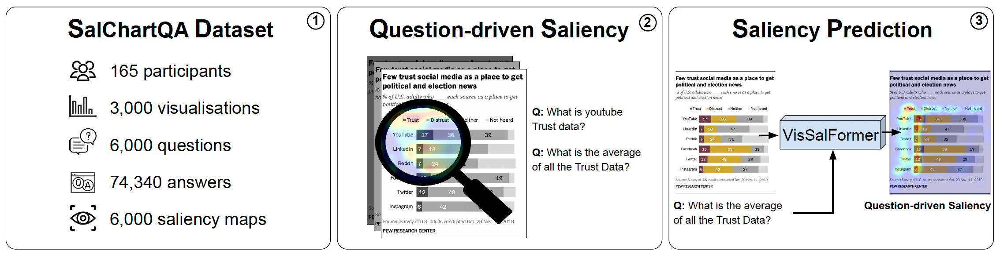

SalChartQA: Question-driven Saliency on Information Visualisations
Yao Wang, Weitian Wang, Abdullah Abdelhafez, Mayar Elfares, Zhiming Hu, Mihai Bâce, Andreas Bulling
Proceedings of the ACM CHI Conference on Human Factors in Computing Systems (CHI), 2024: 1-14.

Abstract
Understanding the link between visual attention and user’s needs when visually exploring information visualisations is under-explored due to a lack of large and diverse datasets to facilitate these analyses. To fill this gap, we introduce SalChartQA – a novel crowd-sourced dataset that uses the BubbleView interface as a proxy for human gaze and a question-answering (QA) paradigm to induce different information needs in users. SalChartQA contains 74,340 answers to 6,000 questions on 3,000 visualisations. Informed by our analyses demonstrating the tight correlation between the question and visual saliency, we propose the first computational method to predict question-driven saliency on information visualisations. Our method outperforms state-of-the-art saliency models, improving several metrics, such as the correlation coefficient and the Kullback-Leibler divergence. These results show the importance of information needs for shaping attention behaviour and paving the way for new applications, such as task-driven optimisation of visualisations or explainable AI in chart question-answering.Links
Paper: paper.pdf
Doi: doi
Supplementary material: supplementary_material.pdf
Dataset and Code: dataset and codeBibTeX
@inproceedings{wang24salchartqa,
title = {SalChartQA: Question-driven Saliency on Information Visualisations},
author = {Wang, Yao and Wang, Weitian and Abdelhafez, Abdullah and Elfares, Mayar and Hu, Zhiming and B{\^a}ce, Mihai and Bulling, Andreas},
year = {2024},
pages = {1--14},
booktitle = {Proceedings of the ACM CHI Conference on Human Factors in Computing Systems},
doi = {10.1145/3613904.3642942}}